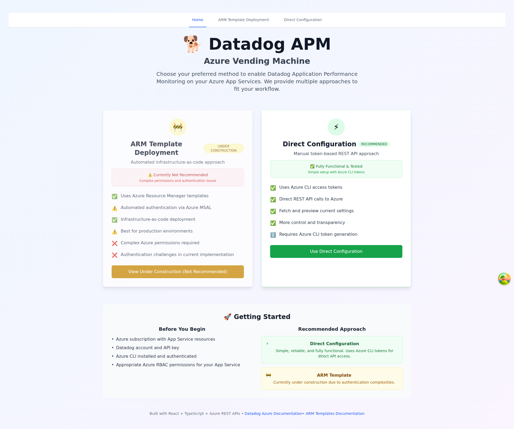
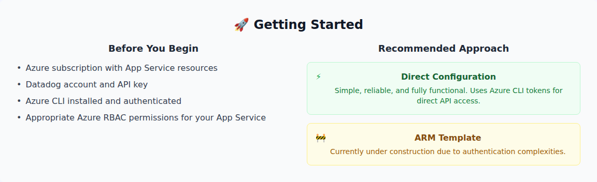

Feature Branch (Current)
Changes: Removed Azure CLI terminal, wider Datadog terminal, smaller text

azure-access-token-section.png
full-page-terminal.png
Master Branch (Original)
Original: Both terminals present, standard width and text size
azure-access-token-section.png
full-page-terminal.png